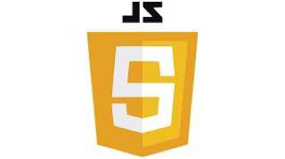

Choose Your Favourite Courses
1. Front End Language
Hypertext Markup Language (HTML)
The HyperText Markup Language or HTML is the standard markup language for documents designed to be displayed in a web browser. It defines the meaning and structure of web content.It is often assisted by technologies such as Cascading Style Sheets (CSS) and scripting languages such as JavaScript.Web browsers receive HTML documents from a web server
or from local storage and renderthe documents into multimedia web pages. HTML describes the structure of a web page semantically and originally included cues for its appearance
Cascading Style Sheets (CSS)
CSS is a style sheet language used for describing the presentation of a document written in a markup language such as HTML or XML including XML dialects such as SVG, MathML or XHTML. CSS is a cornerstone technology of the World Wide Web, alongside HTML and JavaScript. CSS is designed to enable the separation of content and presentation, including layout, colors, and fonts. css file, which reduces complexity and repetition in the structural content; and enable the .css file to be cached to improve the page load speed between the pages that share the file and its formatting.
JavaScript
JavaScript often abbreviated as JS, is a programming language that is one of the core technologies of the World Wide Web, alongside HTML and CSS.As of 2023, 98.7% of websitesuse JavaScript on the client side for webpage behavior,[10] often incorporating third-party libraries. All major web browsers have a dedicated JavaScript engine to execute the code on users devices. JavaScript is a high-level, often just-in-time compiled language that conforms to the ECMAScript standard.[11] It has dynamic typing, prototype-basedobject-orientation, and first-class functions. It is multi-paradigm, supporting event-driven, functional, and imperative programming styles. It has application programming interfaces (APIs) for working with text, dates, regular expressions,standard data structures, and the Document Object Model (DOM).
Hypertext Markup Language (HTML)

Cascading Style Sheets (CSS)
JavaScript

2. Backend Language
PHP
PHP is a general-purpose scripting language geared towards web development. It was originally created by Danish-Canadian programmer Rasmus Lerdorf in 1993 and released in 1995. The PHP reference implementation is now produced by the PHP Group.PHP was originally an abbreviation of Personal Home Page, but it now stands for the recursive initialism PHP: Hypertext Preprocessor. PHP code is usually processed on a web server by a PHP interpreter implemented as a module, a daemon or a Common Gateway Interface (CGI) executable. On a web server, the result of the interpreted and executed PHP code—which may be any type of data, such as generated HTML or binary image data—would form the whole or part of an HTTP response. Various web template systems, web content management systems, and web frameworks exist that can be employed to orchestrate or facilitate the generation of that response. Additionally, PHP can be used for many programming tasks outside the web context, such as standalone graphical applications and robotic drone control. PHP code can also be directly executed from the command line.
Java
Java is a high-level, class-based, object-oriented programming language that is designed to have as few implementation dependencies as possible. It is a general-purpose programming language intended to let programmers write once, run anywhere (WORA),meaning that compiled Java code can run on all platforms that support Java without the need to recompile.Java applications are typically compiled to bytecode that can run on any Java virtual machine (JVM) regardless of the underlying computer architecture. The syntax of Java is similar to C and C++, but has fewer low-level facilities than either of them. The Java runtime provides dynamic capabilities (such as reflection and runtime code modification) that are typically not available in traditional compiled languages. As of 2019, Java was one of the most popular programming languages in use according to GitHub,[citation not found] particularly for client–server web applications, with a reported 9 million developers.
Structured query language (SQL)
Structured query language (SQL) is a standard language for database creation and manipulation. MySQL is a relational database program that uses SQL queries. While SQL commands are defined by international standards, the MySQL software undergoes continual upgrades and improvements..Structured Query Language (SQL) S-Q-L, sometimes /ˈsiːkwəl/ "sequel" for historical reasons is a domain-specific language used in programming and designed for managing data held in a relational database management system (RDBMS), or for stream processing in a relational data stream management system (RDSMS). It is particularly useful in handling structured data, i.e., data incorporating relations among entities and variables.
PHP

Java
Structured query language (SQL)
3.Others
Python
Python is a high-level, general-purpose programming language. Its design philosophy emphasizes code readability with the use of significant indentation via the off-side rule. Python is dynamically typed and garbage-collected
Bootstrap
Bootstrap is a free and open-source CSS framework directed at responsive, mobile-first front-end web development. It contains HTML, CSS and JavaScript-based design templates for typography, forms, buttons, navigation, and other interface components.
C++
C++ is one of the world's most popular programming languages. C++ can be found in today's operating systems, Graphical User Interfaces, and embedded systems. C++ is an object-oriented programming language which gives a clear structure to programs and allows code to be reused, lowering development costs.
Stay in Touch